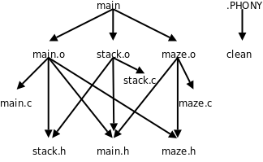

第 22 章 Makefile 基础
1. 基本规则
除了 Hello World 这种极简单的程序之外，一般的程序都是由多个源文件编译链接而成的，这些源文件的处理步骤通常用 Makefile 来管理。Makefile 起什么作用呢？我们先看一个例子，这个例子由第 12 章「栈与队列」例 12.3「用深度优先搜索解迷宫问题」改写而成：
/* main.c */
#include <stdio.h>
#include "main.h"
#include "stack.h"
#include "maze.h"
struct point predecessor[MAX_ROW][MAX_COL] = {
{{-1,-1}, {-1,-1}, {-1,-1}, {-1,-1}, {-1,-1}},
{{-1,-1}, {-1,-1}, {-1,-1}, {-1,-1}, {-1,-1}},
{{-1,-1}, {-1,-1}, {-1,-1}, {-1,-1}, {-1,-1}},
{{-1,-1}, {-1,-1}, {-1,-1}, {-1,-1}, {-1,-1}},
{{-1,-1}, {-1,-1}, {-1,-1}, {-1,-1}, {-1,-1}},
};
void visit(int row, int col, struct point pre)
{
struct point visit_point = { row, col };
maze[row][col] = 2;
predecessor[row][col] = pre;
push(visit_point);
}
int main(void)
{
struct point p = { 0, 0 };
maze[p.row][p.col] = 2;
push(p);
while (!is_empty()) {
p = pop();
if (p.row == MAX_ROW - 1 /* goal */
&& p.col == MAX_COL - 1)
break;
if (p.col+1 < MAX_COL /* right */
&& maze[p.row][p.col+1] == 0)
visit(p.row, p.col+1, p);
if (p.row+1 < MAX_ROW /* down */
&& maze[p.row+1][p.col] == 0)
visit(p.row+1, p.col, p);
if (p.col-1 >= 0 /* left */
&& maze[p.row][p.col-1] == 0)
visit(p.row, p.col-1, p);
if (p.row-1 >= 0 /* up */
&& maze[p.row-1][p.col] == 0)
visit(p.row-1, p.col, p);
print_maze();
}
if (p.row == MAX_ROW - 1 && p.col == MAX_COL - 1) {
printf("(%d, %d)\n", p.row, p.col);
while (predecessor[p.row][p.col].row != -1) {
p = predecessor[p.row][p.col];
printf("(%d, %d)\n", p.row, p.col);
}
} else
printf("No path!\n");
return 0;
}
我们把堆栈和迷宫的代码分别转移到模块 stack.c 和 maze.c 中，main.c 包含它们提供的头文件 stack.h 和 maze.h。
/* main.h */
#ifndef MAIN_H
#define MAIN_H
typedef struct point { int row, col; } item_t;
#define MAX_ROW 5
#define MAX_COL 5
#endif
在 main.h 中定义了一个类型和两个常量，main.c、stack.c和 maze.c 都要用到这些定义，都要包含这个头文件。
/* stack.c */
#include "stack.h"
static item_t stack[512];
static int top = 0;
void push(item_t p)
{
stack[top++] = p;
}
item_t pop(void)
{
return stack[--top];
}
int is_empty(void)
{
return top == 0;
}
/* stack.h */
#ifndef STACK_H
#define STACK_H
#include "main.h" /* provides definition for item_t */
extern void push(item_t);
extern item_t pop(void);
extern int is_empty(void);
#endif
第 12 章「栈与队列」例 12.3「用深度优先搜索解迷宫问题」中的堆栈规定死了只能放 char 型数据，现在我们做进一步抽象，堆栈中放 item_t 类型的数据，item_t 可以定义为任意类型，只要它能够通过函数的参数和返回值传递并且支持赋值操作就行。这也是一种避免硬编码的策略，stack.c 中多次使用 item_t 类型，要改变它的定义只需改变 main.h 中的一行代码。
/* maze.c */
#include <stdio.h>
#include "maze.h"
int maze[MAX_ROW][MAX_COL] = {
0, 1, 0, 0, 0,
0, 1, 0, 1, 0,
0, 0, 0, 0, 0,
0, 1, 1, 1, 0,
0, 0, 0, 1, 0,
};
void print_maze(void)
{
int i, j;
for (i = 0; i < MAX_ROW; i++) {
for (j = 0; j < MAX_COL; j++)
printf("%d ", maze[i][j]);
putchar('\n');
}
printf("*********\n");
}
/* maze.h */
#ifndef MAZE_H
#define MAZE_H
#include "main.h" /* provides defintion for MAX_ROW and MAX_COL */
extern int maze[MAX_ROW][MAX_COL];
void print_maze(void);
#endif
maze.c 中定义了一个 maze 数组和一个 print_maze 函数，需要在头文件 maze.h 中声明，以便提供给 main.c 使用，注意 print_maze 的声明可以不加 extern，而 maze 的声明必须加 extern。
这些源文件可以这样编译：
$ gcc main.c stack.c maze.c -o main
但这不是个好办法，如果编译之后又对 maze.c 做了修改，又要把所有源文件编译一遍，即使 main.c、stack.c 和那些头文件都没有修改也要跟着重新编译。一个大型的软件项目往往由上千个源文件组成，全部编译一遍需要几个小时，只改一个源文件就要求全部重新编译肯定是不合理的。
这样编译也许更好一些：
$ gcc -c main.c
$ gcc -c stack.c
$ gcc -c maze.c
$ gcc main.o stack.o maze.o -o main
如果编译之后又对 maze.c 做了修改，要重新编译只需要做两步：
$ gcc -c maze.c
$ gcc main.o stack.o maze.o -o main
这样又有一个问题，每次编译敲的命令都不一样，很容易出错，比如我修改了三个源文件，可能有一个忘了重新编译，结果编译完了修改没生效，运行时出了 Bug 还满世界找原因呢。更复杂的问题是，假如我改了 main.h 怎么办？所有包含 main.h 的源文件都需要重新编译，我得挨个找哪些源文件包含了 main.h，有的还很不明显，例如 stack.c 包含了 stack.h，而后者包含了 main.h。可见手动处理这些问题非常容易出错，那有没有自动的解决办法呢？有，就是写一个 Makefile 文件和源代码放在同一个目录下：
main: main.o stack.o maze.o
gcc main.o stack.o maze.o -o main
main.o: main.c main.h stack.h maze.h
gcc -c main.c
stack.o: stack.c stack.h main.h
gcc -c stack.c
maze.o: maze.c maze.h main.h
gcc -c maze.c
然后在这个目录下运行 make 编译：
$ make
gcc -c main.c
gcc -c stack.c
gcc -c maze.c
gcc main.o stack.o maze.o -o main
make 命令会自动读取当前目录下的 Makefile 文件[33]，完成相应的编译步骤。Makefile 由一组规则（Rule）组成，每条规则的格式是：
target ... : prerequisites ...
command1
command2
...
例如：
main: main.o stack.o maze.o
gcc main.o stack.o maze.o -o main
[33] 只要符合本章所描述的语法的文件我们都叫它 Makefile，而它的文件名则不一定是
Makefile。事实上，执行make命令时，是按照GNUmakefile、makefile、Makefile的顺序找到第一个存在的文件并执行它，不过还是建议使用Makefile做文件名。除了GNUmake，有些 UNIX 系统的make命令不是 GNUmake，不会查找GNUmakefile这个文件名，如果你写的 Makefile 包含 GNUmake的特殊语法，可以起名为GNUmakefile，否则不建议用这个文件名。
main 是这条规则的目标（Target），main.o、stack.o 和 maze.o 是这条规则的条件（Prerequisite）。目标和条件之间的关系是：欲更新目标，必须首先更新它的所有条件；所有条件中只要有一个条件被更新了，目标也必须随之被更新。所谓「更新」就是执行一遍规则中的命令列表，命令列表中的每条命令必须以一个 Tab 开头，注意不能是空格，Makefile 的格式不像 C 语言的缩进那么随意，对于 Makefile 中的每个以 Tab 开头的命令，make 会创建一个 Shell 进程去执行它。
对于上面这个例子，make 执行如下步骤：
- 尝试更新 Makefile 中第一条规则的目标
main，第一条规则的目标称为缺省目标，只要缺省目标更新了就算完成任务了，其它工作都是为这个目的而做的。由于我们是第一次编译，main文件还没生成，显然需要更新，但规则说必须先更新了main.o、stack.o和maze.o这三个条件，然后才能更新main。 - 所以
make会进一步查找以这三个条件为目标的规则，这些目标文件也没有生成，也需要更新，所以执行相应的命令（gcc -c main.c、gcc -c stack.c和gcc -c maze.c）更新它们。 - 最后执行
gcc main.o stack.o maze.o -o main更新main。
如果没有做任何改动，再次运行 make：
$ make
make: `main' is up to date.
make 会提示缺省目标已经是最新的了，不需要执行任何命令更新它。再做个实验，如果修改了 maze.h（比如加个无关痛痒的空格）再运行 make：
$ make
gcc -c main.c
gcc -c maze.c
gcc main.o stack.o maze.o -o main
make 会自动选择那些受影响的源文件重新编译，不受影响的源文件则不重新编译，这是怎么做到的呢？
make仍然尝试更新缺省目标，首先检查目标main是否需要更新，这就要检查三个条件main.o、stack.o和maze.o是否需要更新。make会进一步查找以这三个条件为目标的规则，然后发现main.o和maze.o需要更新，因为它们都有一个条件是maze.h，而这个文件的修改时间比main.o和maze.o晚，所以执行相应的命令更新main.o和maze.o。- 既然
main的三个条件中有两个被更新过了，那么main也需要更新，所以执行命令gcc main.o stack.o maze.o -o main更新main。
现在总结一下 Makefile 的规则，请读者结合上面的例子理解。如果一条规则的目标属于以下情况之一，就称为需要更新：
- 目标没有生成。
- 某个条件需要更新。
- 某个条件的修改时间比目标晚。
在一条规则被执行之前，规则的条件可能处于以下三种状态之一：
- 需要更新。能够找到以该条件为目标的规则，并且该规则中目标需要更新。
- 不需要更新。能够找到以该条件为目标的规则，但是该规则中目标不需要更新；或者不能找到以该条件为目标的规则，并且该条件已经生成。
- 错误。不能找到以该条件为目标的规则，并且该条件没有生成。
执行一条规则 A 的步骤如下：
- 检查它的每个条件 P：
- 如果 P 需要更新，就执行以P为目标的规则 B。之后，无论是否生成文件 P，都认为 P 已被更新。
- 如果找不到规则 B，并且文件 P 已存在，表示 P 不需要更新。
- 如果找不到规则 B，并且文件 P 不存在，则报错退出。
- 在检查完规则 A 的所有条件后，检查它的目标 T，如果属于以下情况之一，就执行它的命令列表：
- 文件 T 不存在。
- 文件 T 存在，但是某个条件的修改时间比它晚。
- 某个条件 P 已被更新（并不一定生成文件 P）。
通常 Makefile 都会有一个 clean 规则，用于清除编译过程中产生的二进制文件，保留源文件：
clean:
@echo "cleanning project"
-rm main *.o
@echo "clean completed"
把这条规则添加到我们的 Makefile 末尾，然后执行这条规则：
$ make clean
cleanning project
rm main *.o
clean completed
如果在 make 的命令行中指定一个目标（例如 clean），则更新这个目标，如果不指定目标则更新 Makefile 中第一条规则的目标（缺省目标）。
和前面介绍的规则不同，clean 目标不依赖于任何条件，并且执行它的命令列表不会生成 clean 这个文件，刚才说过，只要执行了命令列表就算更新了目标，即使目标并没有生成也算。在这个例子还演示了命令前面加 @ 和 - 字符的效果：如果 make 执行的命令前面加了 @ 字符，则不显示命令本身而只显示它的结果；通常 make 执行的命令如果出错（该命令的退出状态非 0）就立刻终止，不再执行后续命令，但如果命令前面加了 - 号，即使这条命令出错，make 也会继续执行后续命令。通常 rm 命令和 mkdir 命令前面要加 - 号，因为 rm 要删除的文件可能不存在，mkdir 要创建的目录可能已存在，这两个命令都有可能出错，但这种错误是应该忽略的。例如上面已经执行过一遍 make clean，再执行一遍就没有文件可删了，这时 rm 会报错，但 make 忽略这一错误，继续执行后面的 echo 命令：
$ make clean
cleanning project
rm main *.o
rm: cannot remove `main': No such file or directory
rm: cannot remove `*.o': No such file or directory
make: [clean] Error 1 (ignored)
clean completed
读者可以把命令前面的 @ 和 - 去掉再试试，对比一下结果有何不同。这里还有一个问题，如果当前目录下存在一个文件叫 clean 会怎么样呢？
$ touch clean
$ make clean
make: `clean' is up to date.
如果存在 clean 这个文件，clean 目标又不依赖于任何条件，make 就认为它不需要更新了。而我们希望把 clean 当作一个特殊的名字使用，不管它存在不存在都要更新，可以添一条特殊规则，把 clean 声明为一个伪目标：
.PHONY: clean
这条规则没有命令列表。类似 .PHONY 这种 make 内建的特殊目标还有很多，各有不同的用途，详见 GNU make。在 C 语言中要求变量和函数先声明后使用，而 Makefile 不太一样，这条规则写在 clean: 规则的后面也行，也能起到声明 clean 是伪目标的作用：
clean:
@echo "cleanning project"
-rm main *.o
@echo "clean completed"
.PHONY: clean
当然写在前面也行。gcc 处理一个 C 程序分为预处理和编译两个阶段，类似地，make 处理 Makefile 的过程也分为两个阶段：
-
首先从前到后读取所有规则，建立起一个完整的依赖关系图，例如：
图 22.1. Makefile 的依赖关系图

-
然后从缺省目标或者命令行指定的目标开始，根据依赖关系图选择适当的规则执行，执行 Makefile 中的规则和执行 C 代码不一样，并不是从前到后按顺序执行，也不是所有规则都要执行一遍，例如
make缺省目标时不会更新clean目标，因为从上图可以看出，它跟缺省目标没有任何依赖关系。
clean 目标是一个约定俗成的名字，在所有软件项目的 Makefile 中都表示清除编译生成的文件，类似这样的约定俗成的目标名字有：
all，执行主要的编译工作，通常用作缺省目标。install，执行编译后的安装工作，把可执行文件、配置文件、文档等分别拷到不同的安装目录。clean，删除编译生成的二进制文件。distclean，不仅删除编译生成的二进制文件，也删除其它生成的文件，例如配置文件和格式转换后的文档，执行make distclean之后应该清除所有这些文件，只留下源文件。
2. 隐含规则和模式规则
上一节的 Makefile 写得中规中矩，比较繁琐，是为了讲清楚基本概念，其实 Makefile 有很多灵活的写法，可以写得更简洁，同时减少出错的可能。本节我们来看看这样一个例子还有哪些改进的余地。
一个目标依赖的所有条件不一定非得写在一条规则中，也可以拆开写，例如：
main.o: main.h stack.h maze.h
main.o: main.c
gcc -c main.c
就相当于：
main.o: main.c main.h stack.h maze.h
gcc -c main.c
如果一个目标拆开写多条规则，其中只有一条规则允许有命令列表，其它规则应该没有命令列表，否则 make 会报警告并且采用最后一条规则的命令列表。
这样我们的例子可以改写成：
main: main.o stack.o maze.o
gcc main.o stack.o maze.o -o main
main.o: main.h stack.h maze.h
stack.o: stack.h main.h
maze.o: maze.h main.h
main.o: main.c
gcc -c main.c
stack.o: stack.c
gcc -c stack.c
maze.o: maze.c
gcc -c maze.c
clean:
-rm main *.o
.PHONY: clean
这不是比原来更繁琐了吗？现在可以把提出来的三条规则删去，写成：
main: main.o stack.o maze.o
gcc main.o stack.o maze.o -o main
main.o: main.h stack.h maze.h
stack.o: stack.h main.h
maze.o: maze.h main.h
clean:
-rm main *.o
.PHONY: clean
这就比原来简单多了。可是现在 main.o、stack.o 和 maze.o 这三个目标连编译命令都没有了，怎么编译的呢？试试看：
$ make
cc -c -o main.o main.c
cc -c -o stack.o stack.c
cc -c -o maze.o maze.c
gcc main.o stack.o maze.o -o main
现在解释一下前三条编译命令是怎么来。如果一个目标在 Makefile 中的所有规则都没有命令列表，make 会尝试在内建的隐含规则（Implicit Rule）数据库中查找适用的规则。make 的隐含规则数据库可以用 make -p 命令打印，打印出来的格式也是 Makefile 的格式，包括很多变量和规则，其中和我们这个例子有关的隐含规则有：
# default
OUTPUT_OPTION = -o $@
# default
CC = cc
# default
COMPILE.c = $(CC) $(CFLAGS) $(CPPFLAGS) $(TARGET_ARCH) -c
%.o: %.c
# commands to execute (built-in):
$(COMPILE.c) $(OUTPUT_OPTION) $<
# 号在 Makefile 中表示单行注释，就像 C 语言的 // 注释一样。CC 是一个 Makefile 变量，用 CC = cc 定义和赋值，用 $(CC) 取它的值，其值应该是 cc。Makefile 变量像 C 的宏定义一样，代表一串字符，在取值的地方展开。cc 是一个符号链接，通常指向 gcc，在有些 UNIX 系统上可能指向另外一种 C 编译器。
$ which cc
/usr/bin/cc
$ ls -l /usr/bin/cc
lrwxrwxrwx 1 root root 20 2008-07-04 05:59 /usr/bin/cc -> /etc/alternatives/cc
$ ls -l /etc/alternatives/cc
lrwxrwxrwx 1 root root 12 2008-11-01 09:10 /etc/alternatives/cc -> /usr/bin/gcc
CFLAGS 这个变量没有定义，$(CFLAGS) 展开是空，CPPFLAGS 和 TARGET_ARCH 也是如此。这样 $(COMPILE.c) 展开应该是 cc␣空␣空␣空␣-c，去掉所有的 空 得到 cc␣␣␣␣-c，注意中间留下 4 个空格，所以 %.o: %.c 规则的命令 $(COMPILE.c)␣$(OUTPUT_OPTION)␣$< 展开之后是 cc␣␣␣␣-c␣-o␣$@␣$<，和上面的编译命令已经很接近了。
$@ 和 $< 是两个特殊的变量，$@ 的取值为规则中的目标，$< 的取值为规则中的第一个条件。%.o: %.c 是一种特殊的规则，称为模式规则（Pattern Rule）。现在回顾一下整个过程，在我们的 Makefile 中以 main.o 为目标的规则都没有命令列表，所以 make 会查找隐含规则，发现隐含规则中有这样一条模式规则适用，main.o 符合 %.o 的模式，现在 % 就代表 main（称为 main.o 这个名字的 Stem），再替换到 %.c 中就是 main.c。所以这条模式规则相当于：
main.o: main.c
cc -c -o main.o main.c
随后，在处理 stack.o 目标时又用到这条模式规则，这时又相当于：
stack.o: stack.c
cc -c -o stack.o stack.c
maze.o 也同样处理。这三条规则可以由 make 的隐含规则推导出来，所以不必写在 Makefile 中。
先前我们写 Makefile 都是以目标为中心，一个目标依赖于若干条件，现在换个角度，以条件为中心，Makefile 还可以这么写：
main: main.o stack.o maze.o
gcc main.o stack.o maze.o -o main
main.o stack.o maze.o: main.h
main.o maze.o: maze.h
main.o stack.o: stack.h
clean:
-rm main *.o
.PHONY: clean
我们知道，写规则的目的是让 make 建立依赖关系图，不管怎么写，只要把所有的依赖关系都描述清楚了就行。对于多目标的规则，make 会拆成几条单目标的规则来处理，例如
target1 target2: prerequisite1 prerequisite2
command $< -o $@
这样一条规则相当于：
target1: prerequisite1 prerequisite2
command prerequisite1 -o target1
target2: prerequisite1 prerequisite2
command prerequisite1 -o target2
注意两条规则的命令列表是一样的，但 $@ 的取值不同。
3. 变量
这一节我们详细看看 Makefile 中关于变量的语法规则。先看一个简单的例子：
foo = $(bar)
bar = Huh?
all:
@echo $(foo)
我们执行 make 将会打出 Huh?。当 make 读到 foo = $(bar) 时，确定 foo 的值是 $(bar)，但并不立即展开 $(bar)，然后读到 bar = Huh?，确定 bar 的值是 Huh?，然后在执行规则 all: 的命令列表时才需要展开 $(foo)，得到 $(bar)，再展开 $(bar)，得到 Huh?。因此，虽然 bar 的定义写在 foo 之后，$(foo) 展开还是能够取到 $(bar) 的值。
这种特性有好处也有坏处。好处是我们可以把变量的值推迟到后面定义，例如：
main.o: main.c
$(CC) $(CFLAGS) $(CPPFLAGS) -c $<
CC = gcc
CFLAGS = -O -g
CPPFLAGS = -Iinclude
编译命令可以展开成 gcc -O -g -Iinclude -c main.c。通常把 CFLAGS 定义成一些编译选项，例如 -O、-g 等，而把 CPPFLAGS 定义成一些预处理选项，例如 -D、-I 等。用 = 号定义变量的延迟展开特性也有坏处，就是有可能写出无穷递归的定义，例如 CFLAGS = $(CFLAGS) -O，或者：
A = $(B)
B = $(A)
当然，make 有能力检测出这样的错误而不会陷入死循环。有时候我们希望 make 在遇到变量定义时立即展开，可以用 := 运算符，例如：
x := foo
y := $(x) bar
all:
@echo "-$(y)-"
当 make 读到 y := $(x) bar 定义时，立即把 $(x) 展开，使变量 y 的取值是 foo bar，如果把这两行颠倒过来：
y := $(x) bar
x := foo
那么当 make 读到 y := $(x) bar 时，x 还没有定义，展开为空值，所以 y 的取值是 ␣bar，注意 bar 前面有个空格。一个变量的定义从 = 后面的第一个非空白字符开始（从 $(x) 的 $ 开始），包括后面的所有字符，直到注释或换行之前结束。如果要定义一个变量的值是一个空格，可以这样：
nullstring :=
space := $(nullstring) # end of the line
nullstring 的值为空，space 的值是一个空格，后面写个注释是为了增加可读性，如果不写注释就换行，则很难看出 $(nullstring) 后面有个空格。
还有一个比较有用的赋值运算符是 ?=，例如 foo ?= $(bar) 的意思是：如果 foo 没有定义过，那么 ?= 相当于 =，定义 foo 的值是 $(bar)，但不立即展开；如果先前已经定义了 foo，则什么也不做，不会给 foo 重新赋值。
+= 运算符可以给变量追加值，例如：
objects = main.o
objects += $(foo)
foo = foo.o bar.o
object 是用 = 定义的，+= 仍然保持 = 的特性，objects 的值是 main.o $(foo)（注意 $(foo) 前面自动添一个空格），但不立即展开，等到后面需要展开 $(objects) 时会展开成 main.o foo.o bar.o。
再比如：
objects := main.o
objects += $(foo)
foo = foo.o bar.o
object 是用 := 定义的，+= 保持 := 的特性，objects 的值是 main.o $(foo)，立即展开得到 main.o （这时 foo 还没定义），注意 main.o 后面的空格仍保留。
如果变量还没有定义过就直接用 += 赋值，那么 += 相当于 =。
上一节我们用到了特殊变量 $@ 和 $<，这两个变量的特点是不需要给它们赋值，在不同的上下文中它们自动取不同的值。常用的特殊变量有：
$@，表示规则中的目标。$<，表示规则中的第一个条件。$?，表示规则中所有比目标新的条件，组成一个列表，以空格分隔。$^，表示规则中的所有条件，组成一个列表，以空格分隔。
例如前面写过的这条规则：
main: main.o stack.o maze.o
gcc main.o stack.o maze.o -o main
可以改写成：
main: main.o stack.o maze.o
gcc $^ -o $@
这样即使以后又往条件里添加了新的目标文件，编译命令也不需要修改，减少了出错的可能。
$? 变量也很有用，有时候希望只对更新过的条件进行操作，例如有一个库文件 libsome.a 依赖于几个目标文件：
libsome.a: foo.o bar.o lose.o win.o
ar r libsome.a $?
ranlib libsome.a
这样，只有更新过的目标文件才需要重新打包到 libsome.a 中，没更新过的目标文件原本已经在 libsome.a 中了，不必重新打包。
在上一节我们看到 make 的隐含规则数据库中用到了很多变量，有些变量没有定义（例如 CFLAGS），有些变量定义了缺省值（例如 CC），我们写 Makefile 时可以重新定义这些变量的值，也可以在缺省值的基础上追加。以下列举一些常用的变量，请读者体会其中的规律。
AR，静态库打包命令的名字，缺省值是ar。ARFLAGS，静态库打包命令的选项，缺省值是rv。AS，汇编器的名字，缺省值是as。ASFLAGS，汇编器的选项，没有定义。- CC，C 编译器的名字，缺省值是
cc。 - CFLAGS，C 编译器的选项，没有定义。
- CXX，C++ 编译器的名字，缺省值是
g++。 - CXXFLAGS，C++ 编译器的选项，没有定义。
- CPP，C 预处理器的名字，缺省值是
$(CC) -E。 - CPPFLAGS，C 预处理器的选项，没有定义。
- LD，链接器的名字，缺省值是
ld。 - LDFLAGS，链接器的选项，没有定义。
- TARGET_ARCH，和目标平台相关的命令行选项，没有定义。
- OUTPUT_OPTION，输出的命令行选项，缺省值是
-o $@。 - LINK.o，把
.o文件链接在一起的命令行，缺省值是$(CC) $(LDFLAGS) $(TARGET_ARCH)。 - LINK.c，把
.c文件链接在一起的命令行，缺省值是$(CC) $(CFLAGS) $(CPPFLAGS) $(LDFLAGS) $(TARGET_ARCH)。 - LINK.cc，把
.cc文件（C++ 源文件）链接在一起的命令行，缺省值是$(CXX) $(CXXFLAGS) $(CPPFLAGS) $(LDFLAGS) $(TARGET_ARCH)。 - COMPILE.c，编译
.c文件的命令行，缺省值是$(CC) $(CFLAGS) $(CPPFLAGS) $(TARGET_ARCH) -c。 - COMPILE.cc，编译
.cc文件的命令行，缺省值是$(CXX) $(CXXFLAGS) $(CPPFLAGS) $(TARGET_ARCH) -c。 - RM，删除命令的名字，缺省值是
rm -f。
4. 自动处理头文件的依赖关系
现在我们的 Makefile 写成这样：
all: main
main: main.o stack.o maze.o
gcc $^ -o $@
main.o: main.h stack.h maze.h
stack.o: stack.h main.h
maze.o: maze.h main.h
clean:
-rm main *.o
.PHONY: clean
按照惯例，用 all 做缺省目标。现在还有一点比较麻烦，在写 main.o、stack.o 和 maze.o 这三个目标的规则时要查看源代码，找出它们依赖于哪些头文件，这很容易出错，一是因为有的头文件包含在另一个头文件中，在写规则时很容易遗漏，二是如果以后修改源代码改变了依赖关系，很可能忘记修改 Makefile 的规则。为了解决这个问题，可以用 gcc 的 -M 选项自动生成目标文件和源文件的依赖关系：
$ gcc -M main.c
main.o: main.c /usr/include/stdio.h /usr/include/features.h \
/usr/include/sys/cdefs.h /usr/include/bits/wordsize.h \
/usr/include/gnu/stubs.h /usr/include/gnu/stubs-32.h \
/usr/lib/gcc/i486-linux-gnu/4.3.2/include/stddef.h \
/usr/include/bits/types.h /usr/include/bits/typesizes.h \
/usr/include/libio.h /usr/include/_G_config.h /usr/include/wchar.h \
/usr/lib/gcc/i486-linux-gnu/4.3.2/include/stdarg.h \
/usr/include/bits/stdio_lim.h /usr/include/bits/sys_errlist.h main.h \
stack.h maze.h
-M 选项把 stdio.h 以及它所包含的系统头文件也找出来了，如果我们不需要输出系统头文件的依赖关系，可以用 -MM 选项：
$ gcc -MM *.c
main.o: main.c main.h stack.h maze.h
maze.o: maze.c maze.h main.h
stack.o: stack.c stack.h main.h
接下来的问题是怎么把这些规则包含到 Makefile 中，GNU make 的官方手册建议这样写：
all: main
main: main.o stack.o maze.o
gcc $^ -o $@
clean:
-rm main *.o
.PHONY: clean
sources = main.c stack.c maze.c
include $(sources:.c=.d)
%.d: %.c
set -e; rm -f $@; \
$(CC) -MM $(CPPFLAGS) $< > $@.$$$$; \
sed 's,\($*\)\.o[ :]*,\1.o $@ : ,g' < $@.$$$$ > $@; \
rm -f $@.$$$$
sources 变量包含我们要编译的所有 .c 文件，$(sources:.c=.d) 是一个变量替换语法，把 sources 变量中每一项的 .c 替换成 .d，所以 include 这一句相当于：
include main.d stack.d maze.d
类似于 C 语言的 #include 指示，这里的 include 表示包含三个文件 main.d、stack.d 和 maze.d，这三个文件也应该符合 Makefile 的语法。如果现在你的工作目录是干净的，只有 .c 文件、.h 文件和 Makefile，运行 make 的结果是：
$ make
Makefile:13: main.d: No such file or directory
Makefile:13: stack.d: No such file or directory
Makefile:13: maze.d: No such file or directory
set -e; rm -f maze.d; \
cc -MM maze.c > maze.d.$$; \
sed 's,\(maze\)\.o[ :]*,\1.o maze.d : ,g' < maze.d.$$ > maze.d; \
rm -f maze.d.$$
set -e; rm -f stack.d; \
cc -MM stack.c > stack.d.$$; \
sed 's,\(stack\)\.o[ :]*,\1.o stack.d : ,g' < stack.d.$$ > stack.d; \
rm -f stack.d.$$
set -e; rm -f main.d; \
cc -MM main.c > main.d.$$; \
sed 's,\(main\)\.o[ :]*,\1.o main.d : ,g' < main.d.$$ > main.d; \
rm -f main.d.$$
cc -c -o main.o main.c
cc -c -o stack.o stack.c
cc -c -o maze.o maze.c
gcc main.o stack.o maze.o -o main
一开始找不到 .d 文件，所以 make 会报警告。但是 make 会把 include 的文件名也当作目标来尝试更新，而这些目标适用模式规则 %.d: %c，所以执行它的命令列表，比如生成 maze.d 的命令：
set -e; rm -f maze.d; \
cc -MM maze.c > maze.d.$$; \
sed 's,\(maze\)\.o[ :]*,\1.o maze.d : ,g' < maze.d.$$ > maze.d; \
rm -f maze.d.$$
注意，虽然在 Makefile 中这个命令写了四行，但其实是一条命令，make 只创建一个 Shell 进程执行这条命令，这条命令分为 5 个子命令，用 ; 号隔开，并且为了美观，用续行符 \ 拆成四行来写。执行步骤为：
set -e命令设置当前 Shell 进程为这样的状态：如果它执行的任何一条命令的退出状态非零则立刻终止，不再执行后续命令。- 把原来的
maze.d删掉。 - 重新生成
maze.c的依赖关系，保存成文件maze.d.1234（假设当前 Shell 进程的 id 是 1234）。注意，在 Makefile 中$有特殊含义，如果要表示它的字面意思则需要写两个 $，所以 Makefile 中的四个 $ 传给 Shell 变成两个 $，两个 $ 在 Shell 中表示当前进程的 id，一般用它给临时文件起名，以保证文件名唯一。 - 这个
sed命令比较复杂，就不细讲了，主要作用是查找替换。maze.d.1234的内容应该是maze.o: maze.c maze.h main.h，经过sed处理之后存为maze.d，其内容是maze.o maze.d: maze.c maze.h main.h。 - 最后把临时文件
maze.d.1234删掉。
不管是 Makefile 本身还是被它包含的文件，只要有一个文件在 make 过程中被更新了，make 就会重新读取整个 Makefile 以及被它包含的所有文件，现在 main.d、stack.d 和 maze.d 都生成了，就可以正常包含进来了（假如这时还没有生成，make 就要报错而不是报警告了），相当于在 Makefile 中添了三条规则：
main.o main.d: main.c main.h stack.h maze.h
maze.o maze.d: maze.c maze.h main.h
stack.o stack.d: stack.c stack.h main.h
如果我在 main.c 中加了一行 #include "foo.h"，那么：
-
main.c的修改日期变了，根据规则main.o main.d: main.c main.h stack.h maze.h要重新生成main.o和main.d。生成main.o的规则有两条：main.o: main.c main.h stack.h maze.h %.o: %.c # commands to execute (built-in): $(COMPILE.c) $(OUTPUT_OPTION) $<第一条是把规则
main.o main.d: main.c main.h stack.h maze.h拆开写得到的，第二条是隐含规则，因此执行cc命令重新编译main.o。生成main.d的规则也有两条：main.d: main.c main.h stack.h maze.h %.d: %.c set -e; rm -f $@; \ $(CC) -MM $(CPPFLAGS) $< > $@.$$$$; \ sed 's,\($*\)\.o[ :]*,\1.o $@ : ,g' < $@.$$$$ > $@; \ rm -f $@.$$$$因此
main.d的内容被更新为main.o main.d: main.c main.h stack.h maze.h foo.h。 -
由于
main.d被 Makefile 包含，main.d被更新又导致make重新读取整个 Makefile，把新的main.d包含进来，于是新的依赖关系生效了。
5. 常用的 make 命令行选项
-n 选项只打印要执行的命令，而不会真的执行命令，这个选项有助于我们检查 Makefile 写得是否正确，由于 Makefile 不是顺序执行的，用这个选项可以先看看命令的执行顺序，确认无误了再真正执行命令。
-C 选项可以切换到另一个目录执行那个目录下的 Makefile，比如先退到上一级目录再执行我们的 Makefile（假设我们的源代码都放在 testmake 目录下）：
$ cd ..
$ make -C testmake
make: Entering directory `/home/akaedu/testmake'
cc -c -o main.o main.c
cc -c -o stack.o stack.c
cc -c -o maze.o maze.c
gcc main.o stack.o maze.o -o main
make: Leaving directory `/home/akaedu/testmake'
一些规模较大的项目会把不同的模块或子系统的源代码放在不同的子目录中，然后在每个子目录下都写一个该目录的 Makefile，然后在一个总的 Makefile 中用 make -C 命令执行每个子目录下的 Makefile。例如 Linux 内核源代码根目录下有 Makefile，子目录 fs、net 等也有各自的 Makefile，二级子目录 fs/ramfs、net/ipv4 等也有各自的 Makefile。
在 make 命令行也可以用 = 或 := 定义变量，如果这次编译我想加调试选项 -g，但我不想每次编译都加 -g 选项，可以在命令行定义 CFLAGS 变量，而不必修改 Makefile 编译完了再改回来：
$ make CFLAGS=-g
cc -g -c -o main.o main.c
cc -g -c -o stack.o stack.c
cc -g -c -o maze.o maze.c
gcc main.o stack.o maze.o -o main
如果在 Makefile 中也定义了 CFLAGS 变量，则命令行的值覆盖 Makefile 中的值。